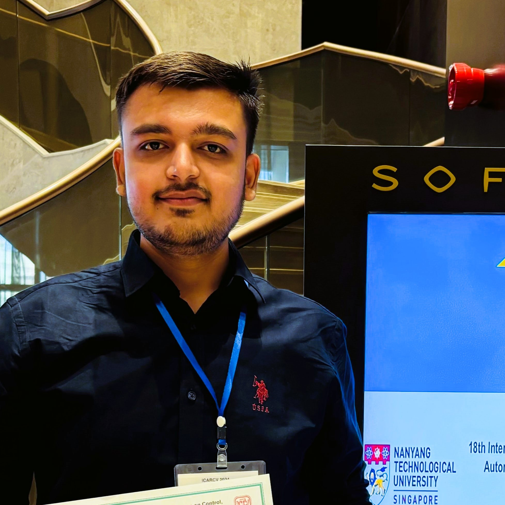

|
Nirav Patel Training Deep Multimodal Neural Networks ü߆Hi! I'm a final year Master's student at L. D. College of Engineering, where I'm advised by Prof. Payal Prajapati. My research focuses on developing computer vision models that can understand and learn long videos. To this end, my recent work explores learning multimodal representations from videos and textual queries to summarize long videos influenced by textual queries. Previously, I completed my undergraduate studies in Computer Science and Engineering from Government Engineering College, Patan. Email | Github | Google Scholar | Blog |
 |
{kind=link}
News
[Dec 2024] Presented my first research work and chaired Image/Video Analysis session at ICARCV 2024, Dubai, UAE.
|
Research |
|

|
Your Interest, Your Summaries: Query-Focused Long Video Summarization
Nirav Patel, Payal Prajapati, Maitrik Shah |
|
|
Query Focused Video Summarization PyTorch Implementation.
Shuwen Xiao, Zhou Zhao, Zijian Zhang, Xiaohui Yan, and Min Yang. "Convolutional Hierarchical Attention Network for Query-Focused Video Summarization." (AAAI 2020) Paper | Code |

|
Micrograd Autograd Automatic Differentiation Engine implementation. Blog | Code |
Professional Service
|
Open Source Contributions |
|
|
|
I have made 7 pull requests that have been merged into the code base of pandas. Contributions mainly include fixing bugs in sum and concat operations, and documentation improvements. Added tests for already fixed bugs, ensuring enhanced code quality and reliability. |
TeachingIn my final year of my Master's program, I instructed bachelor's students in C programming and Data Structures and Algorithms at L. D. College of Engineering ❤️. Pic: Taking a lab session, explaining the concept and implementation of linked lists. |
Blog
Dec 2023 Neural Networks: Fits Squiggle To The Data
|
|
Cloned from JanBarron. |